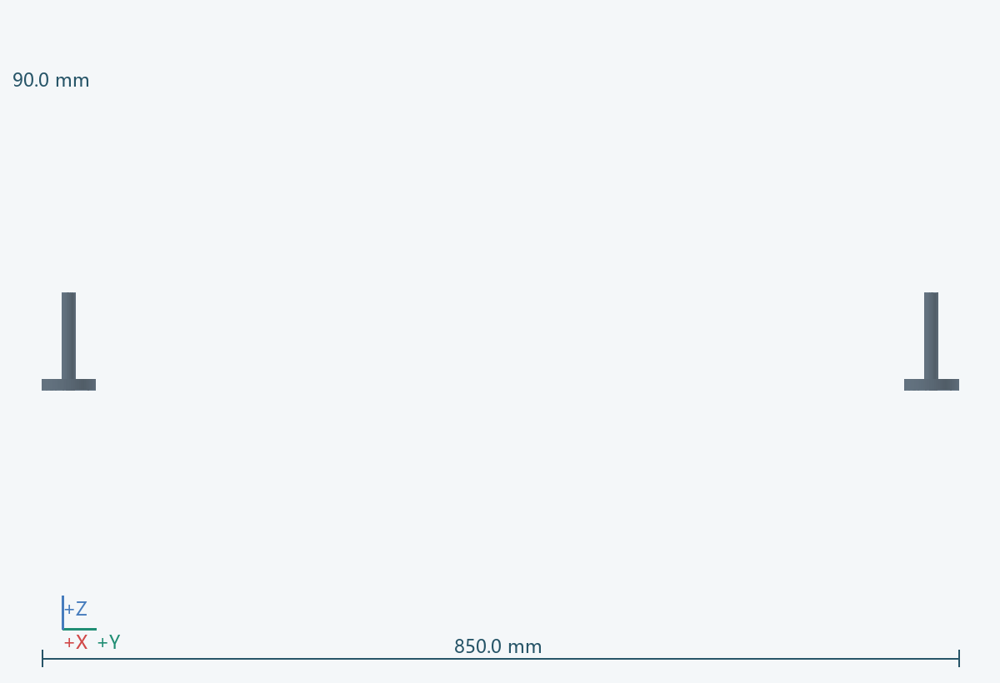
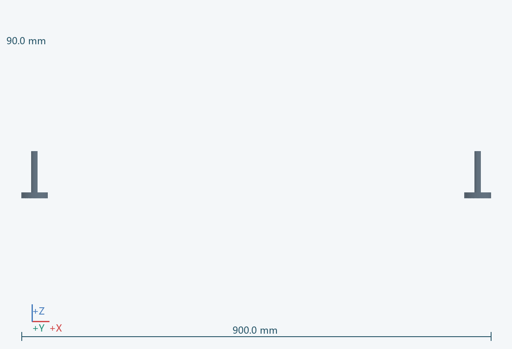
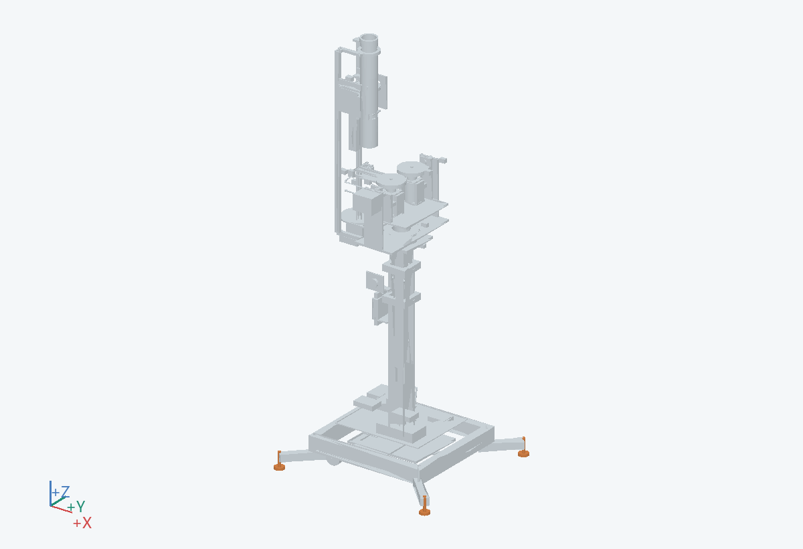

900.0 × 850.0 × 90.0 mm（含所示实例）
训练时落地承载，让搬运轮不作为唯一支撑。
连接 0103；地面接触位置定义稳定性校核的支撑多边形。
带防滑垫的调节脚；承载和螺纹未选型
从支腿端部向下旋出。
核验橡胶与球馆地面兼容性、最大调节量和接地载荷。 关联：U09
PRT-0104__-1_-1, PRT-0104__-1_1, PRT-0104__1_-1, PRT-0104__1_1